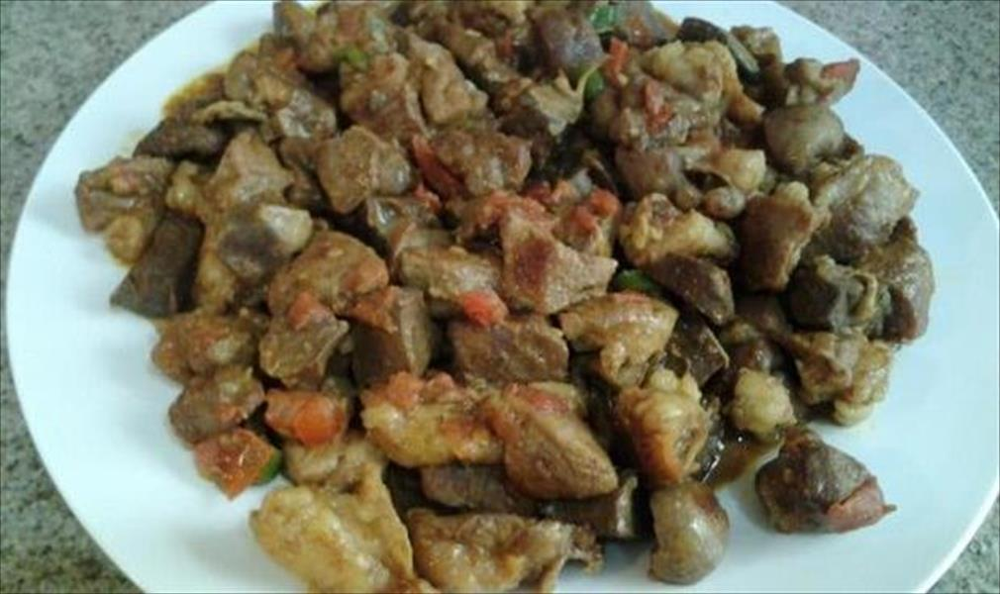

المأكولات


أشهر الأطباق
السلطة
واحدة من أشهر الأطباق النوبية – لحم مطهو مع الفلفل والبصل والسمن حتى يُحمر.
الجاكود
جزء أساسي من التراث النوبي، يُقدم في الاحتفالات والأعراس ورمضان.
العبري
مشروب نوبي مميز ومروٍّ، يُعدّ خصيصاً خلال رمضان ويُقدم مبرداً.
عصيدة أسوان
من الأطباق التقليدية الشهيرة، مصنوعة من الدقيق والحليب والماء والملح، تُقدم ساخنة وتعرف بقيمتها الغذائية العالية.
الخمرات
من الأطباق الشعبية في أسوان، تُصنع من الدقيق والخميرة والسكر وتُقلى حتى تحمر، تتميز بطعمها الحلو.
الكرميد
من الأطباق الشهيرة في الشتاء، يُحضر من الحلبة المطحونة والزيت والملح والدقيق، ذو قوام سميك ونكهة مميزة.

كبد أسوان
يُقدم في الاحتفالات والأعراس، له مكانة خاصة في بيوت أسوان بنكهته الفريدة المميزة.
الملوت
خبز الشمس – من أقدم وأشهر أنواع الخبز في صعيد مصر، مصنوع من القمح ويُخمَّر تحت الشمس.